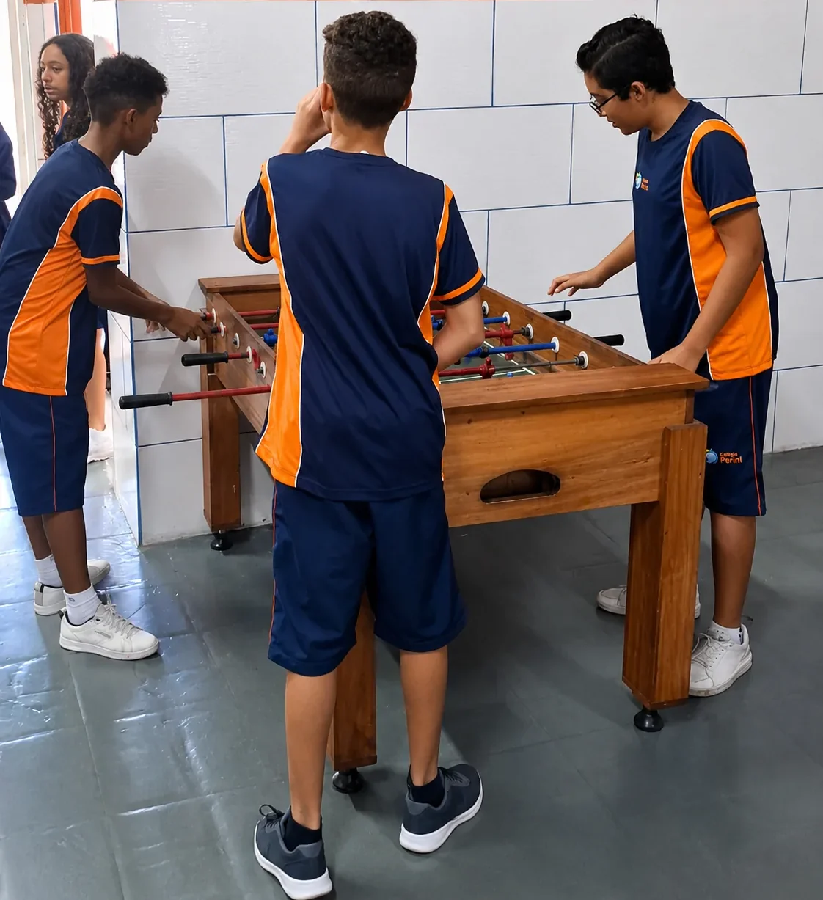

Autonomia com orientação
O estudante aprende a organizar tempo, estudos e responsabilidades com apoio de professores e acompanhamento pedagógico.
Do 6º ao 9º ano, o estudante aprofunda conhecimentos e assume novas responsabilidades com orientação e acompanhamento próximos.

Nessa fase, os conteúdos ganham profundidade enquanto o estudante desenvolve organização, responsabilidade, convivência e autonomia.
O estudante aprende a organizar tempo, estudos e responsabilidades com apoio de professores e acompanhamento pedagógico.
Os conteúdos ganham maior profundidade, conectando diferentes áreas e estimulando raciocínio, pesquisa, comunicação e pensamento crítico.
Feira Cultural e Científica, Circuito do Conhecimento, Podcast Educacional, Informativo Estudantil e outros projetos oficiais ampliam as formas de aprender e participar.
Respeito, diálogo, responsabilidade e colaboração fazem parte de uma proposta que considera o desenvolvimento acadêmico, social e humano.

Projetos, atividades e relações do dia a dia criam oportunidades para colaborar, dialogar e assumir responsabilidades.
Materiais, recursos digitais, avaliações e hábitos de estudo ajudam o aluno a acompanhar o próprio avanço e assumir mais responsabilidade pela aprendizagem.
Ao final do Fundamental II, o estudante chega a uma nova etapa com mais repertório, responsabilidade e autonomia para lidar com demandas acadêmicas maiores.
No Perini, a preparação para o Ensino Superior começa desde o primeiro dia do Ensino Médio e se intensifica de forma progressiva.
Converse com a equipe sobre autonomia, projetos, aprofundamento dos conteúdos e acompanhamento nessa fase.